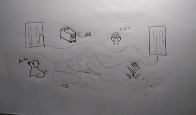

Nessa aula, foi apresentado um exercício em que o aluno deveria “caminhar apenas ouvindo” e de forma espantadora, esse exercício me intrigou de uma maneira que eu não esperava. Consegui perceber sons que eu não escutava normalmente. O exercício se divide em 3 partes.
Na primeira parte do exercício, fiz um desenho simples que exemplifica o que eu senti pelos sons à minha volta. Embora eu não tenha realizado a gravação sonora, anotei em forma de onomatopeia alguns sons e ruídos por mim escutados.
‘‘Bzzzz…!, Vvvvvv…!, Piu Piu Piu…!, Whoosh!, Brrrrrrr…! Drip…! Cruck…’’
